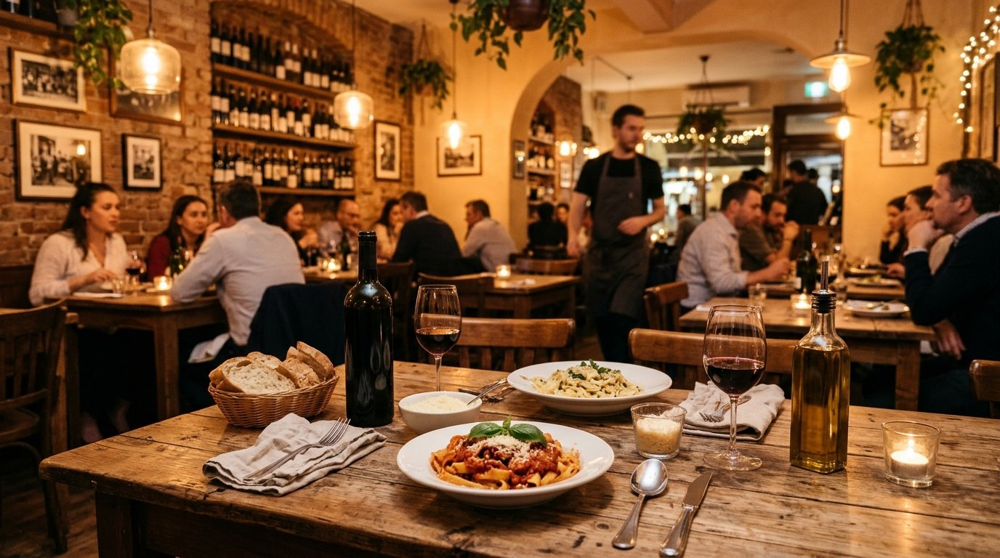
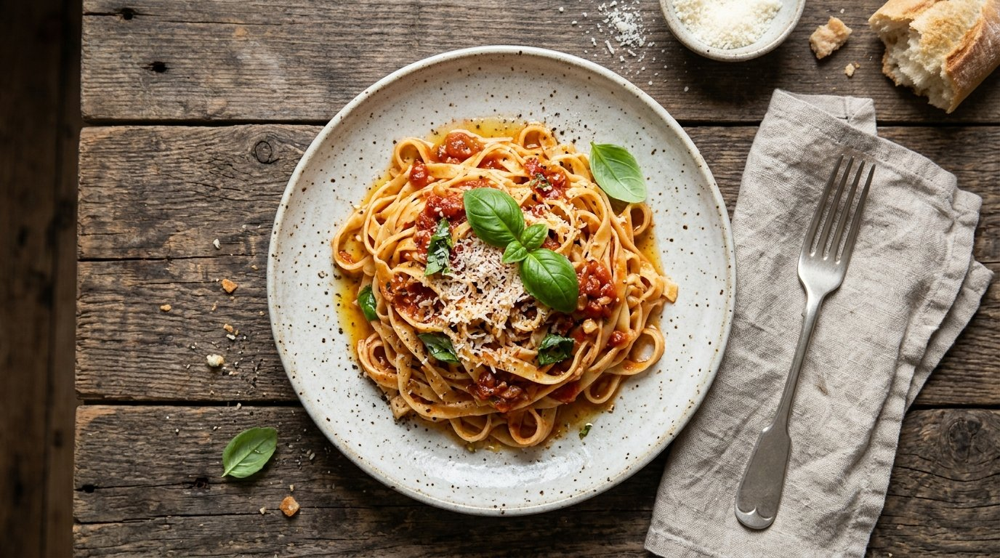
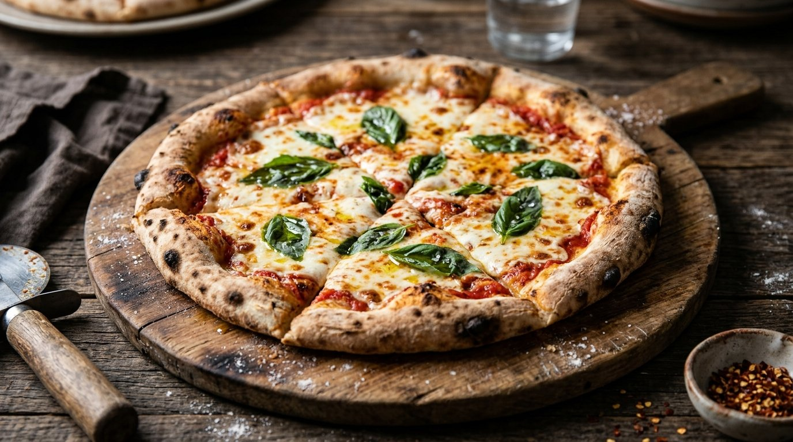
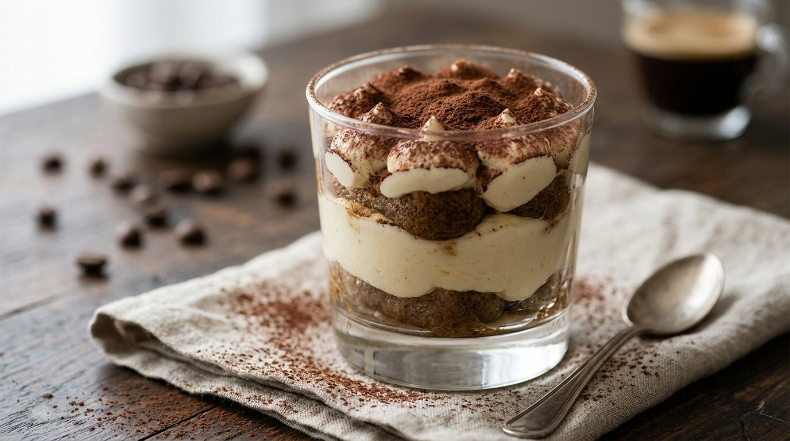

Bruschetta al Pomodoro
R$ 24,90Pão italiano torrado, tomate fresco, manjericão, alho e azeite extra virgem.
Massas frescas feitas na casa desde 1998, em Vila Mariana.
Demonstração: cardápio, preços, história, equipe, depoimentos, endereço e contatos são ilustrativos. A reserva não é enviada nem confirmada.

A Cantina do Zé nasceu em 1998, quando Giuseppe “Zé” Romano chegou da Calábria com a mala cheia de receitas da mãe e a certeza de que comida boa se faz com tempo, manteiga e paciência. O primeiro salão tinha seis mesas, um fogão a lenha e uma fila que dobrava a esquina.
Hoje a casa cresceu, mas o jeito de cozinhar é o mesmo: a massa é aberta na mão todas as manhãs, o ragù ferve por horas antes de ir ao prato e o tiramisù segue a receita original da nonna, sem atalho. A segunda geração da família já está na cozinha e no salão, e a terceira aprende o ofício entre uma aula e outra.
Aqui, cliente antigo tem mesa cativa, aniversário tem cantoria e ninguém sai sem um “volta sempre” do Zé. É assim há mais de 25 anos, e é assim que queremos continuar.



“A lasanha do Zé é a melhor de São Paulo, sem discussão. Virou tradição de domingo na nossa família há anos. O atendimento é tão bom quanto a comida.”
“Pedi o risoto de funghi num jantar de aniversário e foi perfeito do começo ao fim. Ambiente acolhedor, preço justo e um tiramisù que eu sonho até hoje.”
“Sou italiana e confesso que sou exigente com massa. Aqui me senti em casa: gnocchi leve, molho equilibrado e um carinho que não se encontra em qualquer lugar.”
Garanta seu lugar para o almoço de domingo ou o jantar em família. Para grupos acima de 10 pessoas, fale com a gente pelo telefone ou WhatsApp.
Nenhuma reserva foi feita e ninguém será contatado.